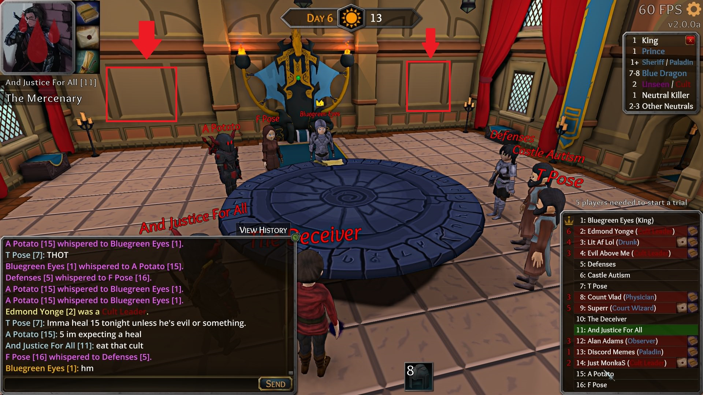
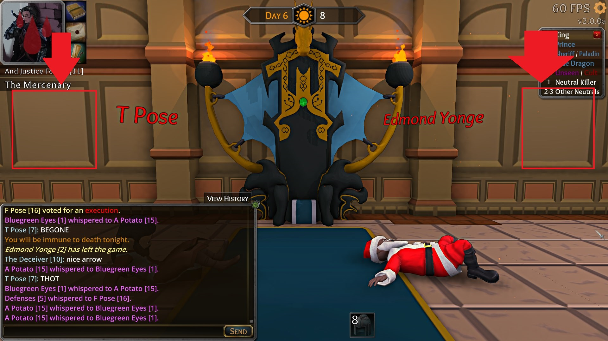
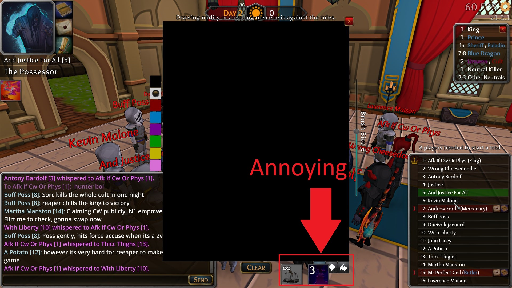

Greetings people, so i just wanna share some of my ideas for the game
-
First is about the skin, did you already though about some class skin ? Like a court-wizard skin with big white beard ? Or a hunter skin with a little bear or wolf near the character ? You can do cool skins class. Actual skins are okaaay i guess ? They’re match with the style of the game (medieval) but personnaly im not very hyped about them actually
 There is no direct link (or match ? idk how to say that) with the game it self, so yeah my idea : skin class
There is no direct link (or match ? idk how to say that) with the game it self, so yeah my idea : skin class
The only problem that might affect all of us (and particularly the new players) is that can be confusing to see like a court-wizard skin guy claiming knight
Oh and also, maybe the start king can have a special king skin ? -
Alright my second idea is about…THE DEATH NOTE again haha, so i noticed some of my suggestion are now into the game (even if you had probably already thought about my suggestion before i talk about) so yeah thats pretty cool ! So here’s my idea :
Insert some of the death note who appear in the actual game in the court, here’s what im talking about :
Résumé


So in the red square they will be deathnote of the game, i think its pretty cool, the only con is if there is a very edgy/racist death note they maybe appear in court…
- I have another thing to suggest, when im poss and i want to draw a death note, the abilites mask the paint tool (days and nights) :
Résumé

Other ideas :
- Death note saves/death note import (looks kinda hard to dev imo)
- Sometimes a temporary Fun/Chaotic game mode, im sure you already think about it
- A REAL mini-game when you’re dead, predict who’s gonna be killed or exed can be more fun, idk how but im sure you can do something better !
- Different court style, i know like when its winter the court is different but it can be cool to have like 2-3 different court all the time
- Different death note style, like a wood deathnote, or a papyrus death note, even toilet paper death note…

- Vocals emote, like on trials you can say “Pardon” or “Exe” one time, something like that (can be a mess, so maybe one time the entire game ?)
And thats all, i know i ask a lot but thats just suggestions/ideas for you to working on it, if you dont like some ideas please tell me, if you like it well im glad ! I dont ask the dev to work on these right now, in fact i dont ask them to work on it at all, if you like and want to work on its up to you but yeah, i’ll be very happy to see some of my suggest in game 
Wish you a good day guys ! (and sorry for english mistake i could have maked writing this post)